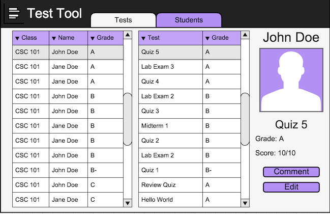

Initially the Student Directory will show a list of students with greyed out
text telling the instructor to select a student. The scrollable grid view to the left
contains a list of students showing their class, name, and grade based on current tests.
See Figure 24 for visual details.
Figure 24: Blank Student Directory Screen.
In the middle of the screen a new list. It contains a list of tests that the student has taken. The left side of the list contains the test name, the right contains the grade. The first result in the list will be automatically selected.
The far right contains the relevant information about the student and their test. The very top contains the students name with a picture of the student underneath. Underneath the student's picture is the name of the currently selected test followed by the students grade and score on the test.

Figure 25: Selected Student.
The far left shows similar information to the right side of Figure 25. However in addition there is a Done and Cancel button. Both return the instructor to the screen on figure 2 once left clicked. The difference being the done button will save comments, cancel will not save changes. The edit button up top shift the instructor into edit mode once left clicked (see next section).
The red X next to the edit button indicates wether the student got the question right. The red X would be a green check if the instructor got the question right.
The previous and next button at the bottom of the screen will navigate
the instructor backwards and forwards in the questions respectively. The white field next
to the comment tag allows the instructor to enter a text comment once left clicked. The
middle right area contains the test question and the students answer.
Figure 26: Test Comments.
The top also contains a new text field for Extra Points. The default value is a greyed out
zero. The instructor then left clicks on the text field to enter a point value to adjust
a students score.
Figure 27: Test Edit.